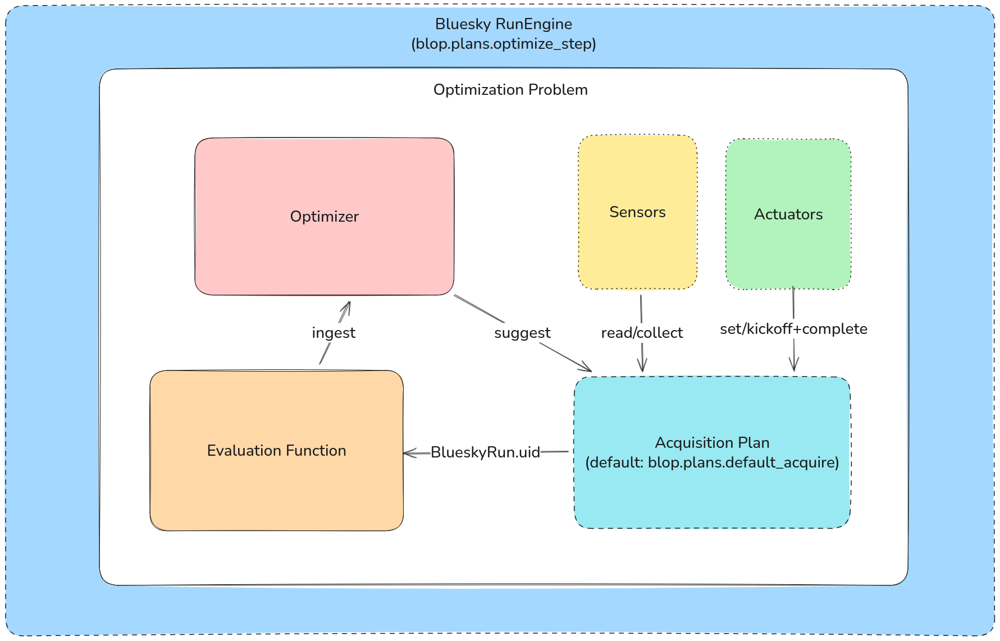

Protocols for Optimization#
Blop provides a set of protocols which enable users to define their own optimization workflows. These protocols are designed to be compatible with the Bluesky ecosystem, and are therefore compatible with the Bluesky RunEngine.
There are three main protocols:
blop.protocols.Optimizer: A protocol for defining an optimizer. How to suggest points to evaluate and ingest outcomes to inform the optimization.blop.protocols.EvaluationFunction: A protocol for transforming acquired data into measurable outcomes.blop.protocols.AcquisitionPlan: An optional protocol for defining an acquisition plan. I.e. how to acquire data from the beamline.
The blop.protocols.OptimizationProblem encapsulates all of these components into an immutable structure that can be used with specific optimization-focused
Bluesky plans. Immutability is important to ensure that the optimization problem is not modified after it has been created or used!
Note
For a full API reference, see Protocols.
Data Flow#
The data flow for a typical optimization workflow is as follows:
The optimizer suggests a set of points to evaluate.
The acquisition plan is used to acquire data from the beamline.
The evaluation function is used to transform the acquired data into outcomes.
The outcomes are ingested by the optimizer to inform future suggestions.
{kind=link}

The Bluesky RunEngine is used to execute each optimization workflow step using blop.plans.optimize() and blop.plans.optimize_step().
These plans are compatible with any NamedMovable or Flyable as a blop.protocols.Actuator as well as Readable and Collectable as a blop.protocols.Sensor. All of these are Bluesky protocols. For example, Ophyd signals can be used directly with Blop since they implement both the NamedMovable and Readable protocols.
Furthermore, fly-scanning acquisition plans are supported with a custom blop.protocols.AcquisitionPlan that uses actuators and sensors that implement the Flyable and Collectable protocols, respectively.
For more information on the differences between step-scanning and fly-scanning in Bluesky, see the explanation in ophyd-async.
Blop optimizers and acquisition plans#
This protocol design allows you to pick and choose only the components you care about with regard to your optimization workflow. While Blop provides a default optimizer and acquisition plan, you are free to implement your own!
Blop provides built-in optimizers for common beamline optimization use cases, such as Bayesian optimization with Ax.
Similarly, Blop provides a blop.plans.default_acquire() acquisition plan that is compatible with most beamline optimization use cases.